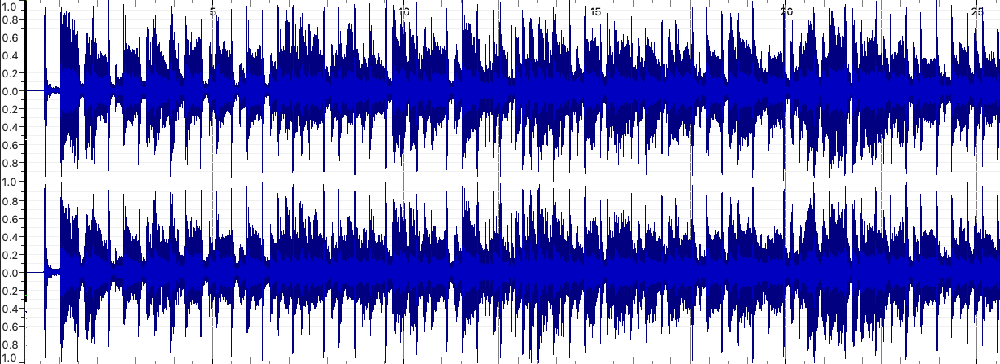
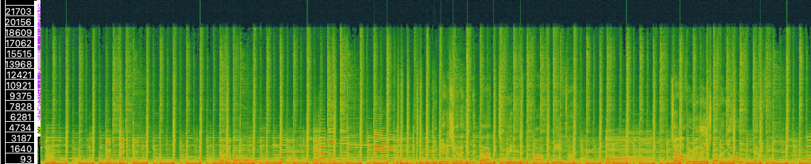
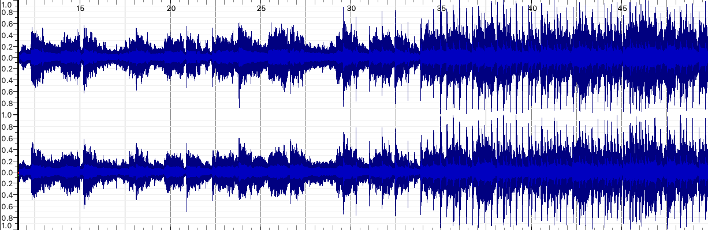
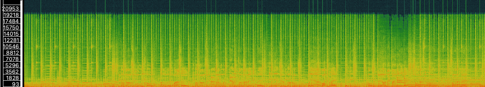
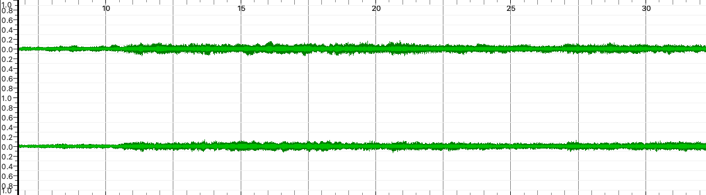
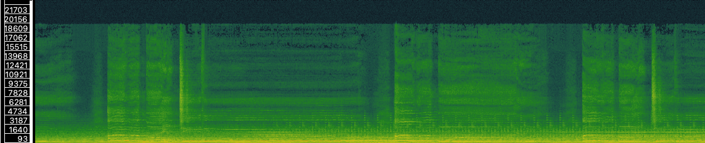

Week 8 Analysing & Extracting Meaning from Audio
Task 1: Analyse Audio Tracks
For this task, I selected three audio tracks by Dire Straits that relate to my chosen theme.
Selected Tracks (MP3)
- Sultans of Swing – Dire Straits
- Walk of Life – Dire Straits
- Money for Nothing – Dire Straits
Track Information Table
| Track | Artist | Composer | Copyright | Genre | Source | Format | Channels | Sample Rate | Bitrate | Duration |
|---|---|---|---|---|---|---|---|---|---|---|
| Sultans of Swing | Dire Straits | Mark Knopfler | © Warner Records – Used for Educational Purposes Only | Rock | Apple Music (Licensed Streaming Source) | mp3 | 2 (stereo) | 48000 Hz | 320000 bps | 05:50 |
| Walk of Life | Dire Straits | Mark Knopfler | © Warner Records – Used for Educational Purposes Only | Rock | Apple Music (Licensed Streaming Source) | mp3 | 2 (stereo) | 48000 Hz | 320000 bps | 04:12 |
| Money for Nothing | Dire Straits | Mark Knopfler & Sting | © Warner Records – Used for Educational Purposes Only | Rock | Apple Music (Licensed Streaming Source) | mp3 | 2 (stereo) | 48000 Hz | 320000 bps | 08:26 |
Task 2: Basic Analysis of Tracks in Sonic Visualiser
Below are waveform and spectrogram images generated in Sonic Visualiser for each track.
Sultans of Swing
Waveform
Spectrogram
Walk of Life
Waveform
Spectrogram
Money for Nothing
Waveform
Spectrogram
Reflection
This week I explored how audio features become visible using digital tools. Comparing waveforms and spectrograms of the three Dire Straits tracks helped me notice differences in intensity, frequency, and style. Sultans of Swing has strong mid-range guitar melodies, Walk of Life feels more rhythmic and lively, and Money for Nothing has heavier low-frequency content in its iconic riff. One advantage of time-frequency analysis over just looking at the waveform is that it shows how frequencies change over time, giving a clearer picture of the song’s texture and structure.